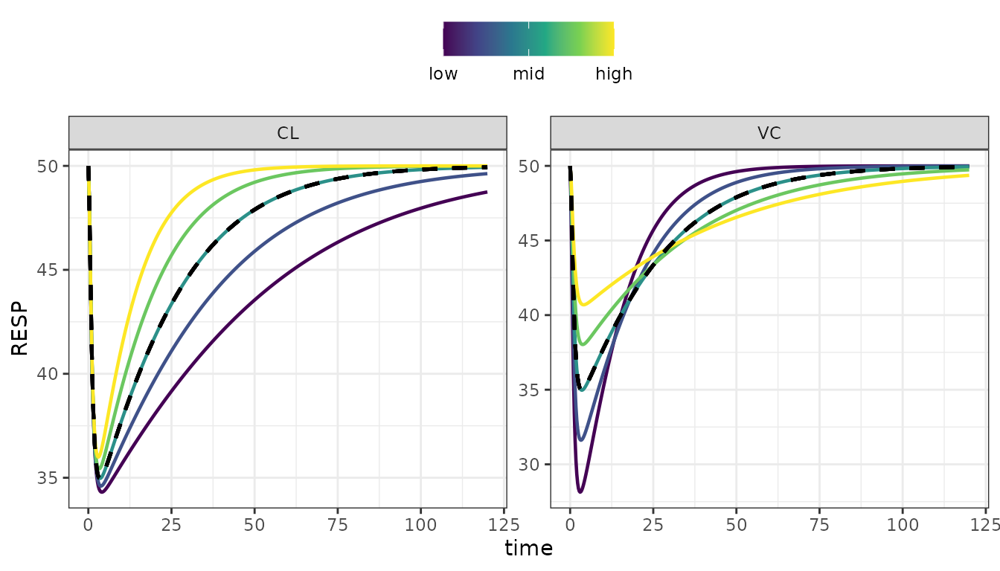
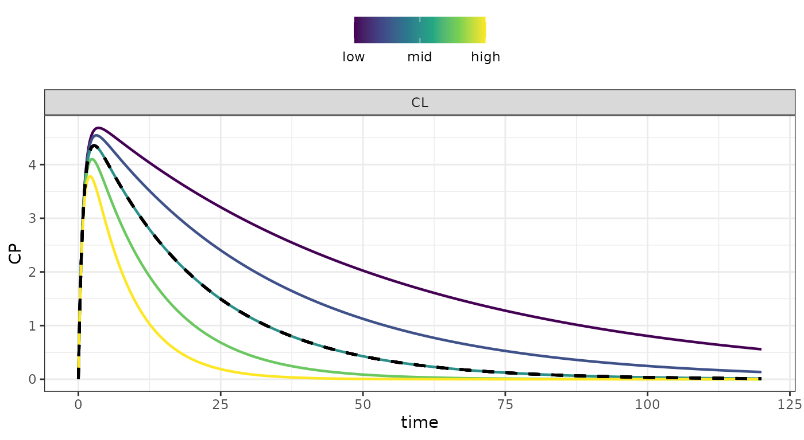
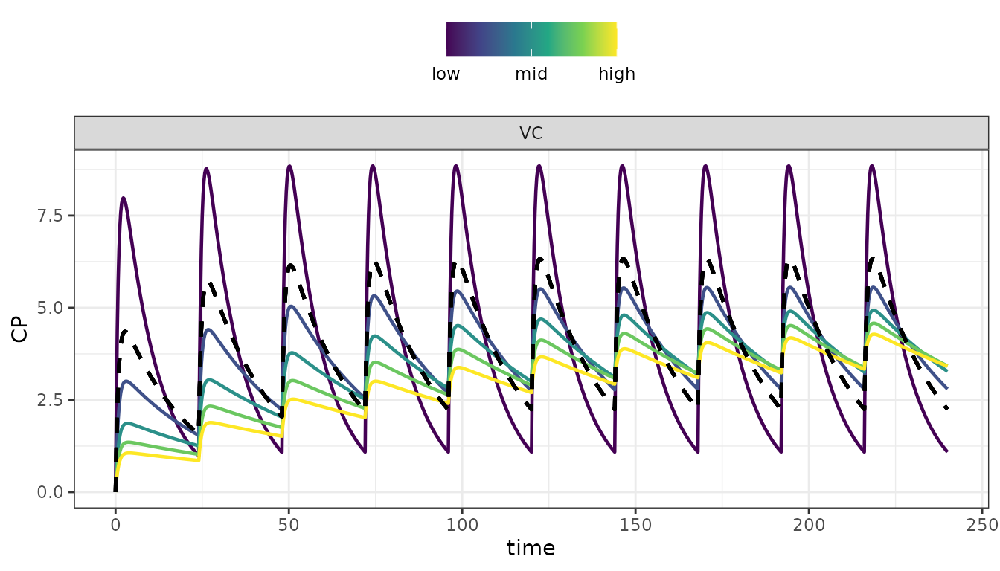
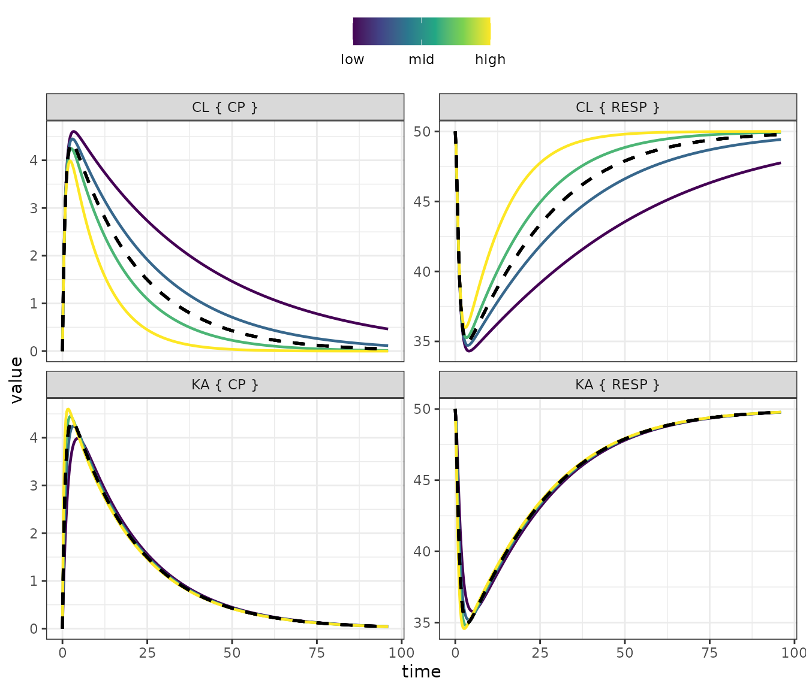
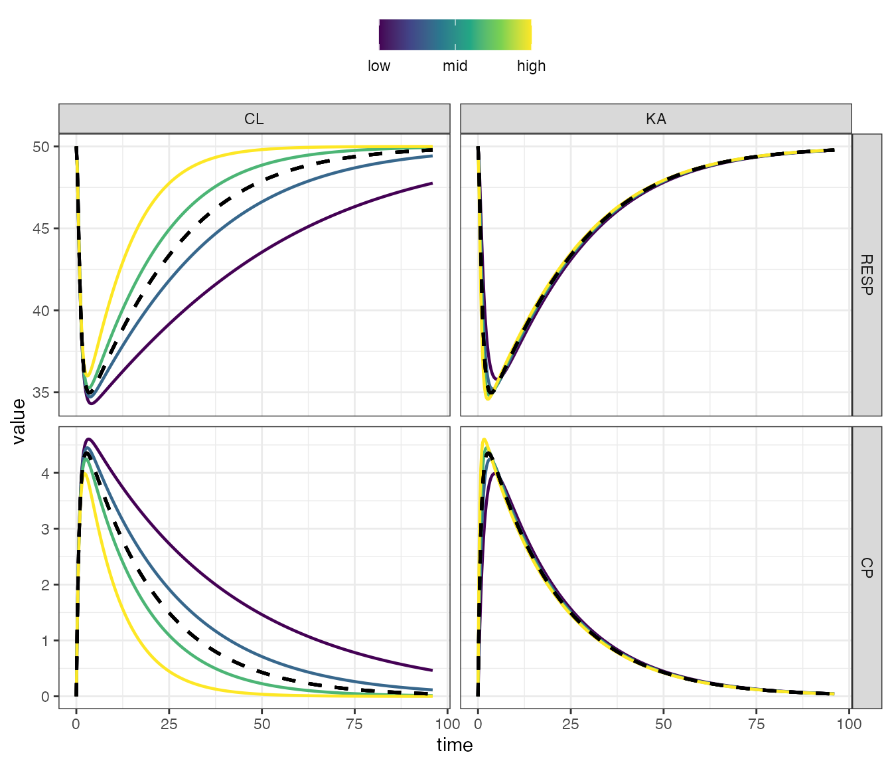
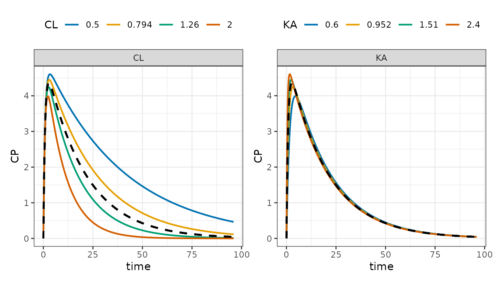
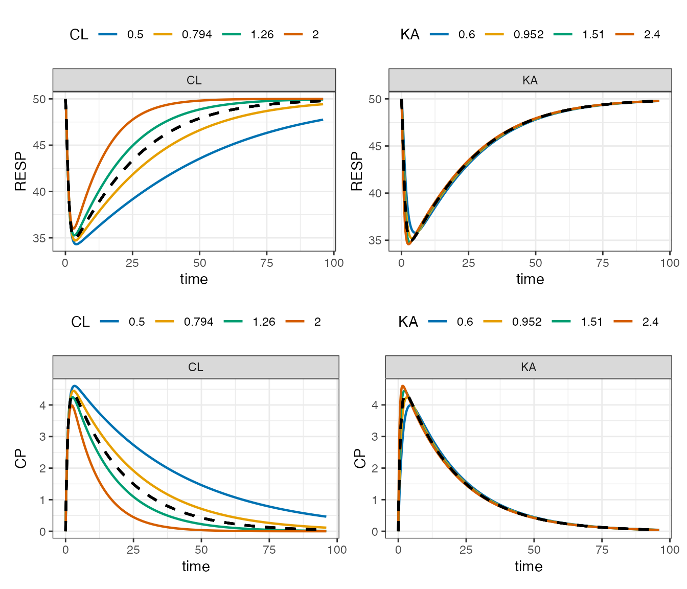
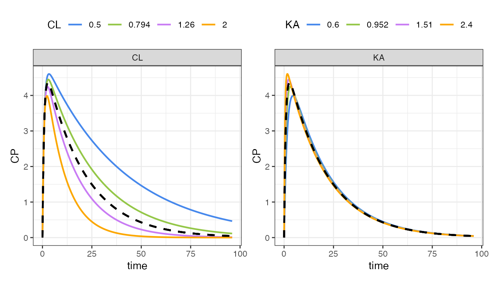

mrgsim.sa is a package that allows you to do various types of ad-hoc or local sensitivity analysis for models written in mrgsolve. This vignette will help you get started.
By “ad-hoc” sensitivity analysis, I mean selecting some model parameters of interest, varying them at certain discrete, systematic way, simulating from those varied parameters and visualizing the outputs. For example, “what happens when you double the value of a parameter or cut it in half; lets plots outputs for parameters within those two extremes, filling in with 3 or 4 values in between.”
So first, we need a model. This can be any model you write
using the mrgsolve package. Here, we’ll use the example
house model provided by mrgsolve
mod <- house(outvars = "CP,RESP")This model has parameters
param(mod).
. Model parameters (N=14):
. name value . name value
. CL 1 | SEX 0
. D1 2 | SEXCL 0.7
. F1 1 | SEXVC 0.85
. IC50 10 | VC 20
. KA 1.2 | WT 70
. KIN 100 | WTCL 0.75
. KOUT 2 | WTVC 1and outputs
outvars(mod). $cmt
. [1] "RESP"
.
. $capture
. [1] "CP"Let’s vary CL and VC and look at the
RESP output.
As suggested in the example above, lets double and halve those
parameters, and look a total of 5 values between those extremes. Use the
parseq_fct() function after selecting the parameters you
want to vary
The “base” value for each parameter is whatever is currently in the model; in this case it is
. $CL
. [1] 1
.
. $VC
. [1] 20Passing the .factor argument as 2 means multiply those
base values by 2 for the upper extreme and 1/2 for the lower extreme.
The .n argument says to fill in 5 parameter values between
those two extremes.
The sens_each() function call above tells you to vary
CL and VC one at a time.
The output is a tibble in long format, with class
sens_each
out.
[38;5;246m# A tibble: 9,680 × 7
[39m
. case time p_name p_value dv_name dv_value ref_value
.
[38;5;250m*
[39m
[3m
[38;5;246m<int>
[39m
[23m
[3m
[38;5;246m<dbl>
[39m
[23m
[3m
[38;5;246m<chr>
[39m
[23m
[3m
[38;5;246m<dbl>
[39m
[23m
[3m
[38;5;246m<chr>
[39m
[23m
[3m
[38;5;246m<dbl>
[39m
[23m
[3m
[38;5;246m<dbl>
[39m
[23m
.
[38;5;250m 1
[39m 1 0 CL 0.5 RESP 50 50
.
[38;5;250m 2
[39m 1 0 CL 0.5 RESP 50 50
.
[38;5;250m 3
[39m 1 0 CL 0.5 CP 0 0
.
[38;5;250m 4
[39m 1 0 CL 0.5 CP 0 0
.
[38;5;250m 5
[39m 1 0 CL 0.5 RESP 50 50
.
[38;5;250m 6
[39m 1 0 CL 0.5 RESP 50 50
.
[38;5;250m 7
[39m 1 0 CL 0.5 CP 0 0
.
[38;5;250m 8
[39m 1 0 CL 0.5 CP 0 0
.
[38;5;250m 9
[39m 1 0.25 CL 0.5 RESP 48.7 48.7
.
[38;5;250m10
[39m 1 0.25 CL 0.5 CP 1.29 1.29
.
[38;5;246m# ℹ 9,670 more rows
[39m
class(out). [1] "sens_each" "tbl_df" "tbl" "data.frame"Taking inventory of this output
count(out, p_name, dv_name).
[38;5;246m# A tibble: 4 × 3
[39m
. p_name dv_name n
.
[3m
[38;5;246m<chr>
[39m
[23m
[3m
[38;5;246m<chr>
[39m
[23m
[3m
[38;5;246m<int>
[39m
[23m
.
[38;5;250m1
[39m CL CP
[4m2
[24m420
.
[38;5;250m2
[39m CL RESP
[4m2
[24m420
.
[38;5;250m3
[39m VC CP
[4m2
[24m420
.
[38;5;250m4
[39m VC RESP
[4m2
[24m420We pass this output object to sens_plot() and name the
variable we want to plot
sens_plot(out, "RESP")
There are other ways to vary parameters in the model
-
parseq_fct()- increase and decrease by a certain factor -
parseq_cv()- increase and decrease by a certain coefficient of variation -
parseq_range()- manually specify the range for varying parameters -
parseq_manual()- manually specify all values for the parameters
For example, to vary CL by 60% coefficient of variation,
plotting 5 values between -2 and 2 sd and looking at CP
output

Or we can look at how VC influences approach to steady
state
out <-
mod %>%
ev(amt = 100, ii = 24, addl = 10) %>%
update(end = 240) %>%
parseq_manual(VC = seq(10,100,20)) %>%
sens_each()
sens_plot(out, "CP")
We can also look at multiple outputs on the same plot
The facet_wrap layout puts parameters in rows and
outputs in columns
sens_plot(out, layout = "facet_wrap")
The facet_grid layout puts outputs in rows and
parameters in columns
sens_plot(out, layout = "facet_grid")
You can also plot this in “grid” format, where the actual parameter values are shown in the legend
sens_plot(out, dv_name = "CP", grid = TRUE)
Or look at multiple outputs
out %>%
select_sens(dv_name = "RESP,CP") %>%
sens_plot(grid = TRUE) %>%
patchwork::wrap_plots(ncol = 1)
Try a different palette
sens_plot(
out,
"CP",
grid = TRUE,
palette = ggsci::scale_color_atlassian()
)